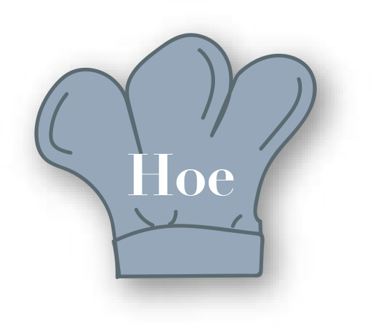

In de Baking Lab gebruiken ze restanten van restaurants die anders worden weggegooid. Dit varieert van oud brood tot andere reststromen, waaronder vezels uit groente en fruit.
Ze gooien niks weg, zo maken ze lekker gebak van oude croissants en van fruitvezels maken ze weer allemaal nieuwe grondstoffen. Erg vernieuwend dus!
Ze leren je in hun microbakkerij hoe je op een creatieve manier leuke nieuwe recepten kunt maken. Deze innovatieve ideeën testen ze in hun baking lab.
Het leuke is dat je bij hun direct de keuken in kunt kijken om te zien hoe alles gemaakt wordt. Ook ruik je meteen de heerlijke vers gebakken broden. Hier krijg je wel trek van!